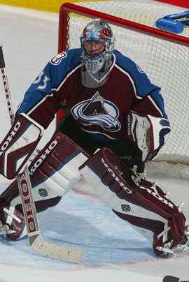

Karriär
Patrick Roy har vunnit Stanley Cup fyra gånger, de två första med Montreal Canadiens och de följande två med Colorado Avalanche. Han har vunnit Conn Smythe Trophy som den mest värdefulle spelaren i NHL under Stanley Cup-slutspelet tre gånger. Roy är ansedd som en av världens bästa målvakter genom tiderna och blev 2006 invald i Hockey Hall of Fame.
Patrick Roy var den målvakt som bäst praktiserade butterfly-stilen. Han var reaktionssnabb, hade bra speluppfattning och var mentalt stark, men var mindre bra i spelet med målvaktsklubban.
Roy var också känd för sin vidskeplighet som innebar att han skrev sina barns namn på klubban före varje match, inte trampade på de röda och blåa linjerna före matchen, pratade med stolparna under matcherna och att han i sitt skåp under resten av säsongen sparade de puckar som använts vid matcher där han hållit nollan.
1998 samlade tidningen The Hockey News ihop en kommitté av 50 hockeyexperter bestående av före detta NHL-spelare, journalister, TV-bolag, tränare och styrelsemedlemmar för att göra en lista över de 100 bästa spelarna i NHL:s historia. Experterna röstade fram Patrick Roy på 22:e plats totalt och på fjärde plats bland målvakterna efter Terry Sawchuk, Jacques Plante och Glenn Hall.

| Position | Målvakt |
| Skjuter | Vänster |
| Längd | 185 cm |
| Vikt | 86 kg |